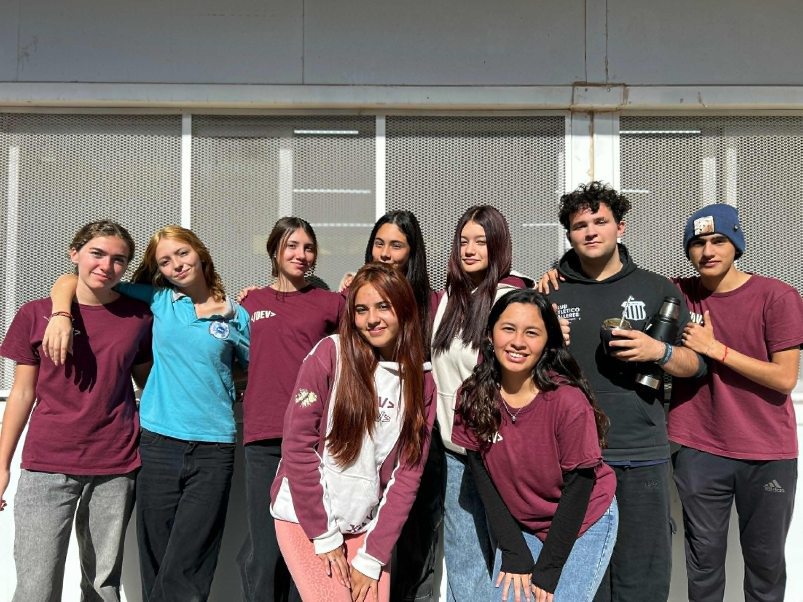

Sobre nosotros
¿Quiénes somos?
Somos un grupo de estudiantes de 6° año de la escuela PROa La Falda, unidos por la pasión por la tecnología y el compromiso con el medio ambiente. Nuestro proyecto, Aqua Nova, nace con el objetivo de innovar en el monitoreo de ecosistemas acuáticos, desarrollando soluciones que contribuyan a una acuicultura más sostenible y eficiente.

Nuestra Misión
Diseñar y desarrollar un prototipo de dispositivo autónomo equipado con sensores ambientales para analizar las condiciones del agua en criaderos y sistemas de cultivo acuático, facilitando la toma de decisiones en la acuicultura.